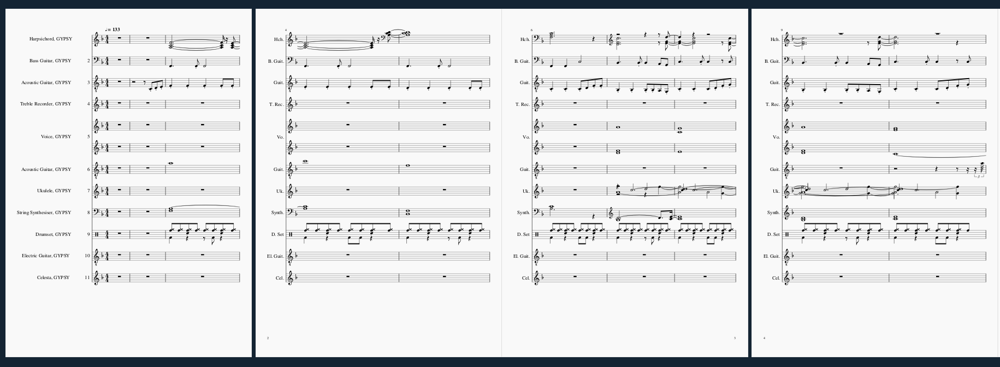
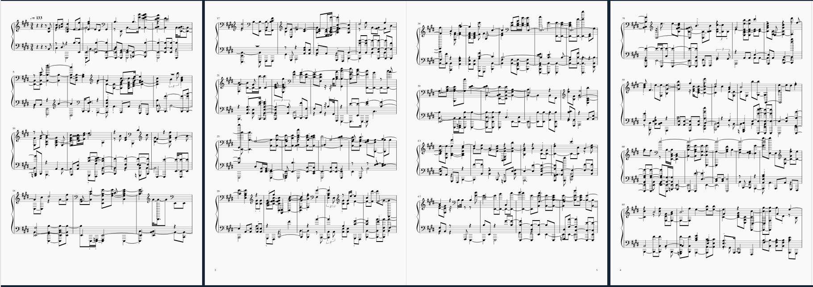

Similarity Matrix: This was generated based on three different jazz compositions, acquired on the 'Free Music Archive'.
Similarity Matrix: This was generated based on three different jazz compositions, acquired on the 'Free Music Archive'.
 
The above images feature the first four pages of the song, 'Gypsy' by Fleetwood Mac (as in line with my recurring theme). The first image is the default MuseScore notation representation. The second image on the otherhand, was generated by exporting the MuseScore notation above, as a wav file. It was then transcribed using Sonic Visualiser and once again loaded into Musecore, which consequently produced a different result. The most obvious difference was the instrumentals. The piano roll in image 2, as expected featured the piano. Whereas the original score contained many different instruments alongside the piano; including the drums, the electric and bass guitars and the ukulele. The piano roll densely contains many notes. What seems to have occurred is that the notes of the other instruments have been transferred to the piano; consequently, producing the combining the sounds of many different instruments into one.